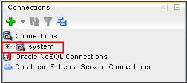

This 5-minute tutorial shows you how to use SQL Developer to
create a database connection.
Background
A schema is a collection of database objects. A schema is owned
by a database user and shares the same name as the user. Schema
objects are logical structures created by users. Some objects,
such as tables or indexes, hold data. Other objects, such as
views or synonyms, consist of a definition only.
What Do You Need?
Oracle Database 18c19c
SQL Developer 19.1
Installed the sample schemas in the pluggable database
Create
a Database Connection
A database connection is a SQL Developer object that specifies
the necessary information for connecting to a specific database,
as a specific user of that database. You must have at least one
database connection (existing, created, or imported) to use SQL
Developer. To create a database connection , perform the
following steps:
In a terminal window, set the environment variable. Change
directories to the sqldeveloper directory under $ORACLE_HOME.
Invoke SQL Developer by executing the sh sqldeveloper.sh
command.
$ . oraenv
ORACLE_SID = [oracle] ? orcl
The Oracle base has been set to /u01/app/oracle
$ cd $ORACLE_HOME/sqldeveloper
$ sh sqldeveloper.sh
Oracle SQL Developer
Copyright (c) 1997, 2015, Oracle and/or its affiliates. All rights reserved.
Enter a connection name of your choice, username of system
and password for the SYSTEM user. Select "Save
Password" if you want to save your password for
future connections as this user. Accept the default connection
type and role. Enter the hostname, port, and SID. You can
click Test to ensure
that the connection works correctly. Click Connect.Description of the illustration a3
Your connection is displayed in the Connections tab on the
left side and a SQL worksheet is opened automatically.
 Description of the illustration a4
 Create
a Database Connection Using SQL Developer
Create
a Database Connection Using SQL Developer Before You Begin
Before You Begin Create
a Database Connection
Create
a Database Connection